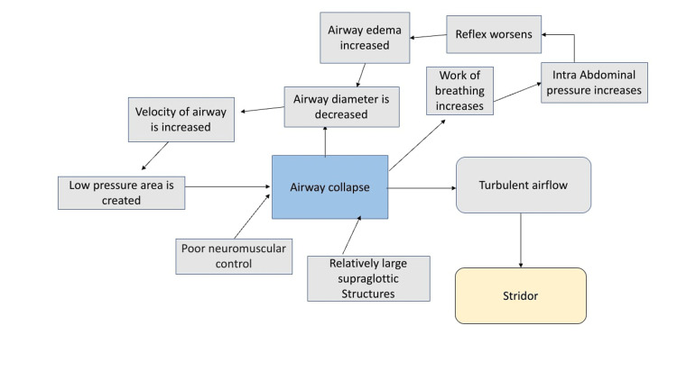
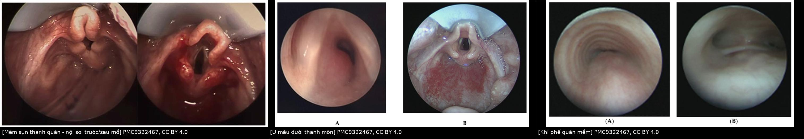
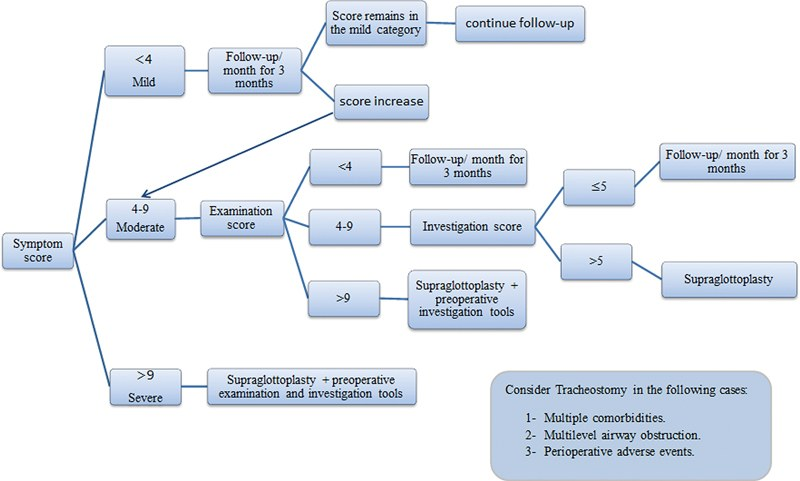
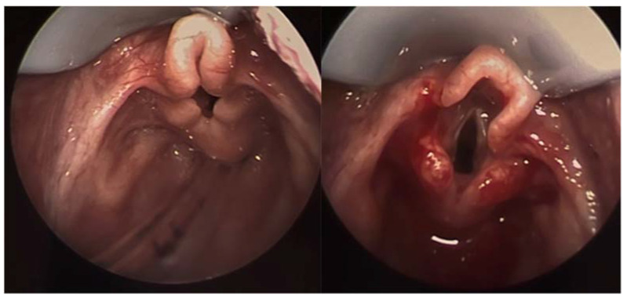
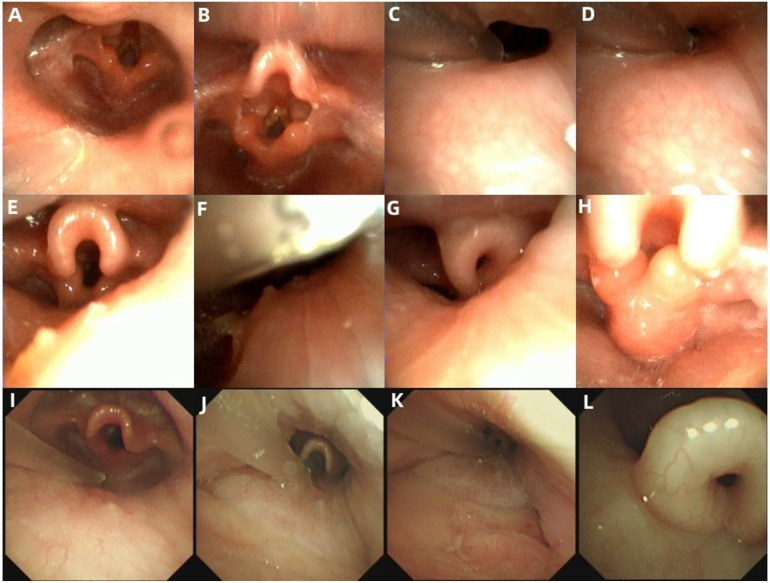
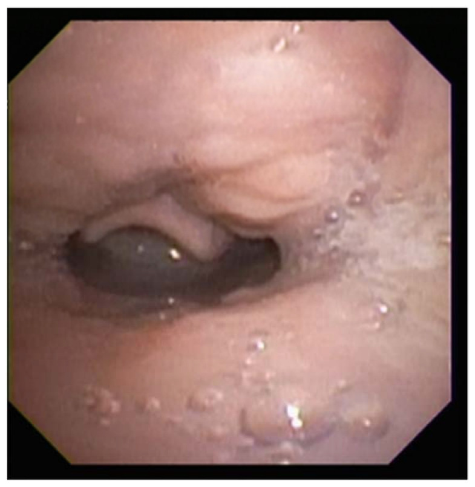

694 — Mềm sụn thanh quản ở nhũ nhi: phân độ, nội soi khi ngủ (DISE) & chỉ định mổ / Infantile laryngomalacia
Tags: pattern:sa-thanh-mon vung:thanh-quan score:Elsobki-2025 score:Attya-2025 protocol:DISE protocol:PSG
Mức chắc chắn (certainty): tổng hợp y văn (literature synthesis) — đoàn hệ tiến cứu, nghiên cứu phân độ, PSG và RCT từ y văn mở; số liệu đọc trực tiếp từ bài gốc ghi PMCID trong sources.md; ảnh CC BY 4.0, tên tác giả đối chiếu authorString Europe PMC.
Bài này nối tiếp 603 (Pierre Robin & tắc nghẽn đường thở trên) và 612 (cấp cứu đường thở trẻ em). 603 trả lời “khối chèn ép nào gây tắc nghẽn”; bài này trả lời “tiếng rít thì hít vào ở một nhũ nhi khỏe mạnh là mềm sụn thanh quản hay bệnh khác, phân độ nào, và khi nào cần mổ” — đồng thời nhấn mạnh hình ảnh động (nội soi, DISE, PSG) chứ không phải phim tĩnh.
1. Tổng quan bệnh học – cơ chế hình ảnh
- Mềm sụn thanh quản (laryngomalacia, LM) là dị tật thanh quản bẩm sinh hay gặp nhất và là nguyên nhân của khoảng 75% các ca tiếng rít (stridor) ở nhũ nhi (Elsobki 2025, PMC12122112). Bệnh cảnh điển hình: tiếng rít thì hít vào, tăng khi nằm ngửa, khi khóc, khi bú; giảm khi nằm nghiêng hoặc khi ngủ sâu.
- Bản chất là sa động (dynamic collapse), không phải hẹp cố định: sụn thanh quản non yếu + trương lực cơ hầu–thanh quản chưa trưởng thành + mô thừa trên thanh môn. Khi hít vào, áp lực âm trong đường thở tăng, vận tốc khí tăng → áp lực thành giảm (hiệu ứng Bernoulli) → mô thừa bị hút vào lòng; dòng khí chuyển động rối → tiếng rít. Sơ đồ cơ chế: xem ảnh dưới (Jain & Jain 2022, PMC9597386).

Cơ chế vòng xoáy bệnh sinh của mềm sụn thanh quản: mô thừa trên thanh môn + kiểm soát thần kinh–cơ chưa hoàn chỉnh → sa đường thở → tăng công hô hấp → tăng áp lực ổ bụng → phù nề → càng hẹp. Nguồn: Jain D, Jain S, Cureus 2022 (PMC9597386, Fig. 1), CC BY 4.0.- Vì sao phải chụp/soi ĐỘNG: đường kính thanh môn thay đổi theo pha hô hấp và theo trương lực cơ. Trên nội soi lúc thức, trương lực cơ còn cao nên có thể che mất sa thanh môn; khi ngủ (đặc biệt ngủ ngửa, giai đoạn REM) trương lực giảm tối đa → sa rõ nhất. Đây là lý do nội soi gây ngủ (drug-induced sleep endoscopy, DISE) phát hiện được 100% ca LM so với 18,7% khi soi lúc thức trong một đoàn hệ 21 nhũ nhi (Wei 2025, PMC12509733).
- Ba thể nội soi (Olney/Kay, dùng rộng rãi):
- Thể I: niêm mạc sụn phễu (arytenoid) thừa, sa vào lòng khi hít vào.
- Thể II: dây thanh–nắp thanh môn (aryepiglottic fold) ngắn, nắp thanh môn cuộn tròn (“hình omega”).
- Thể III: nắp thanh môn sa ra sau/thanh môn (epiglottic collapse), che kín tiền đình thanh quản.
- Phân bố thể trong đoàn hệ 112 ca: thể II 54,5%, thể I 18,75%, thể III 5,4%, thể hỗn hợp I+II 21,4%; tuổi trung bình lúc chẩn đoán 4,3 ± 2,2 tháng (Elsobki 2025, PMC12122112).
- Mức độ nặng không tỷ lệ thuận với hình thái: trong 112 ca, 39,3% nhẹ – 42,9% vừa – 17,9% nặng theo điểm triệu chứng; toàn bộ ca nhẹ theo dõi không cần mổ, còn cả 20 ca nặng đều được mổ (Elsobki 2025).
- TẠI SAO PSG quan trọng hơn “nhìn thanh quản”: mức độ sa trên nội soi chỉ tương quan yếu với chỉ số ngưng thở trên PSG (R² = 0,10, Kirjavainen 2025, PMC12507697). Trong 42 nhũ nhi: AHI thể III 25,41 ± 6,95 sự kiện/giờ, thể II 12,50 ± 5,05, thể I 2,84 ± 1,96; sau mổ AHI giảm còn 1,76 (thể III) và 0,97 (thể II), SpO₂ thấp nhất tăng từ 69,5% lên 93,6% (Bredun 2025, PMC12525033).
- Tư thế ngủ làm đổi kết quả: ở 69 nhũ nhi so sánh được hai tư thế, OAHI trung vị 22/giờ khi nằm ngửa so với 7/giờ khi nằm nghiêng (p < 0,0001), và CO₂ cuối thì thở ra cao hơn khi ngửa (Kirjavainen 2025).
- Dịch tễ – tiên lượng: đa số tự khỏi khi trẻ lớn lên (bệnh tự giới hạn); khoảng 20% cần can thiệp phẫu thuật (Attya 2025, PMC12321643). Các yếu tố nặng: suy dinh dưỡng, tím tái, ngưng thở, co lõm lồng ngực nặng, bệnh lý thần kinh–cơ kèm theo.
- Nuốt – hít sặc: nuốt khó gặp ở phần lớn ca nặng (thể III 100%, thể II 83,3%, thể I 42,9% trong đoàn hệ 42 ca — Bredun 2025); sau mổ, phân tích gộp 6 nghiên cứu (330 trẻ) cho thấy giảm 59% tỷ lệ nuốt khó (Rossoni 2024, PMC10843910; độ không đồng nhất cao I² = 93%).
2. Mẫu hình + chẩn đoán phân biệt theo vị trí và pha hô hấp (gamut)
- Quy tắc định khu bằng pha tiếng rít:
- Thì hít vào (inspiratory): tắc nghẽn ngoài lồng ngực — thanh quản/tầng trên thanh môn (LM, sa nắp thanh môn, nang thung lũng, liệt dây thanh hai bên, hẹp thanh môn).
- Thì thở ra (expiratory): tắc nghẽn trong lồng ngực — khí phế quản mềm (tracheomalacia), chèn ép từ mạch máu, u trong lòng khí quản.
- Hai thì (biphasic): tổn thương cố định vùng thanh môn/dưới thanh môn (hẹp dưới thanh môn, vòng mạch, hẹp khí quản).
- Gamut theo vị trí trên nội soi:
- Tầng trên thanh môn: LM thể I–III; LM thứ phát (bệnh thần kinh–cơ, hội chứng Down, CHARGE, giảm trương lực); nang thung lũng (vallecular cyst); tuyến giáp lưỡi (lingual thyroid); phì đại amidan–VA; phù nề do trào ngược.
- Thanh môn: liệt dây thanh (một/hai bên), dính thanh môn (laryngeal web), u nhú thanh quản (recurrent respiratory papillomatosis).
- Dưới thanh môn: hẹp dưới thanh môn bẩm sinh/mắc phải, u máu dưới thanh môn (subglottic hemangioma) — thường kèm u máu da (“beard distribution”).
- Khí quản: khí phế quản mềm, hẹp khí quản, vòng mạch (vascular ring), rò khí–thực quản.
- Tổn thương phối hợp rất hay gặp: 26/112 ca (23,2%) có tổn thương đường thở đồng thời — khí quản mềm 8 ca, khí–phế quản mềm 7 ca, hẹp dưới thanh môn 4 ca, vòng mạch 2 ca, liệt dây thanh 2 ca (Elsobki 2025). 30/112 ca (26,8%) có bất thường bẩm sinh kèm theo: thần kinh 14 ca (bại não, động kinh), tim 13 ca, Down 3 ca.
- Gamut theo bệnh nền: trẻ sinh non, hội chứng Down, CHARGE, Pierre Robin, bệnh cơ–thần kinh, loạn trương lực thực quản–hầu; trẻ có u máu da vùng râu → nghĩ u máu dưới thanh môn; trẻ đột ngột rít sau đặt nội khí quản → hẹp dưới thanh môn mắc phải.

Trái: mềm sụn thanh quản trước và ngay sau mổ (nắp thanh môn cuộn, hẹp lòng); giữa: u máu dưới thanh môn (A) và sau điều trị (B); phải: khí phế quản mềm thì thở ra (A, B). Cả ba ảnh: PMC9322467, CC BY 4.0; ảnh ghép letterbox giữ nguyên tỷ lệ.3. Bảng so sánh phân biệt (ma trận đối chiếu)
| Thực thể (entity) | Hình ảnh/nội soi điển hình | Chốt vào (rule-in) | Chốt loại (rule-out) | Gợi ý xác nhận |
|---|---|---|---|---|
| Mềm sụn thanh quản thể I–III | Sa niêm mạc sụn phễu/dây thanh–nắp thanh môn/nắp thanh môn khi hít vào, hết khi thở ra; triệu chứng tăng khi ngửa | Sa động thì hít vào + hết khi ngủ nghiêng + nội soi thức bình thường không loại trừ | Hẹp cố định cả hai thì, không đổi theo pha → không phải LM đơn thuần | Nội soi mềm lúc thức + DISE; PSG |
| LM thứ phát (bệnh thần kinh–cơ, Down, CHARGE) | Sa thanh môn kèm giảm trương lực, chậm phát triển, bất thường khác | Bệnh nền + sa thanh môn lan rộng + nhiều tầng | Trẻ phát triển bình thường, chỉ một tầng → LM đơn thuần | Khám thần kinh–di truyền, MRI não, DISE |
| Trào ngược thanh–hầu (laryngopharyngeal reflux) | Phù nề niêm mạc sau sụn phễu, viêm đỏ, không sa rõ | Viêm đỏ/ phù nề lan tỏa + triệu chứng sau bú | Không có sa động điển hình → không phải nguyên nhân chính của rít | Thử điều trị + nội soi lại; RCT cho thấy acid suppression không thêm lợi ích ở LM nhẹ–vừa |
| Hẹp dưới thanh môn | Vòng xơ dưới dây thanh, lòng hẹp cố định, rít hai thì | Hẹp cố định, không thay đổi theo pha | Sa động thì hít vào → không phải hẹp cố định | Nội soi + CT cổ ngực lát mỏng |
| U máu dưới thanh môn | Khối đỏ–tím dưới dây thanh, một bên hoặc lan; thường 3–6 tháng tuổi | Khối mạch máu + u máu da vùng râu + tăng dần rồi thoái triển | Niêm mạc bình thường, chỉ sa động → LM | Nội soi, MRI có cản quang, propranolol thử |
| Khí phế quản mềm | Hẹp lòng khí quản thì thở ra, giảm khi hít vào; có thể kèm rít hai thì | Hẹp động thì thở ra, đo được % hẹp | Không hẹp thì thở ra → loại | Nội soi khi ngủ, CT 4D/động, fluoroscopy |
| Liệt dây thanh | Dây thanh bất động, không khép khi phát âm, rít hai thì, khàn | Bất động một/hai bên + khàn | Dây thanh di động đối xứng → loại | Nội soi, EMG thanh quản, CT/MRI hố sau–cổ |
| Nang thung lũng/tuyến giáp lưỡi | Khối tròn đáy lưỡi, đẩy nắp thanh môn ra sau, rít tư thế | Khối choán chỗ cố định + khó nuốt | Không có khối, chỉ mô thừa → LM | Nội soi, MRI/CT cổ |
- Nguyên tắc đọc chung (áp dụng cả cho ổ dịch sau mổ — bài 693): cùng một “ổ dịch” trên mặt cắt, bản chất (mật – máu – mủ – dịch tiết) quyết định cách đọc; với đường thở, “sa động” hay “hẹp cố định” cũng là hai bản chất khác nhau, không thể suy từ một ảnh tĩnh.
4. Protocol chụp/soi + hệ phân độ và điểm chuẩn hóa
- Bước 1 — nội soi thanh quản mềm lúc thức (awake flexible laryngoscopy): ống soi 3,1 mm (ví dụ BF-XP190) qua mũi, không gây mê; ghi hình liên tục cả thì hít vào – thở ra – khóc – bú; đo % diện tích lỗ thanh môn bị che khi hít vào. Đây là bước đầu để loại trừ khối choán chỗ, liệt dây thanh, hẹp cố định — nhưng âm tính không loại trừ LM.
- Bước 2 — DISE khi nghi ngờ hoặc cần quyết định mổ: duy trì tự thở, không dùng giãn cơ; an thần theo tuổi — trẻ ngoài sơ sinh: midazolam (88,9% ca) hoặc midazolam + dexmedetomidine (11,1%); sơ sinh: chloral hydrate 10% ± phenobarbital (Wei 2025). Theo dõi SpO₂ liên tục; trong 21 ca có 1 ca (4,8%) giảm oxy máu, xử lý bằng thông khí mặt nạ áp lực dương (Wei 2025).
- Bước 3 — PSG (đa ký giấc ngủ) khi có ngưng thở/co lõm nặng/tím tái hoặc trước mổ: ghi AHI/OAHI, ODI, SpO₂ thấp nhất, CO₂ cuối thì thở ra, và so sánh tư thế ngửa – nghiêng. Phân độ thường dùng ở trẻ: nhẹ 1–5, vừa 5–10, nặng > 10 sự kiện/giờ (ngưỡng kinh điển; cần đối chiếu phòng thí nghiệm từng nơi).
- Bước 4 — hình ảnh bổ trợ khi cần:
- X-quang/fluoroscopy đường thở động: thấy hẹp thì thở ra (khí phế quản mềm) hoặc hẹp cố định; liều thấp, không cần thuốc.
- CT ngực–cổ lát mỏng/CT 4D (free-breathing): đánh giá vòng mạch, hẹp khí quản, u máu, bất thường mạch; không phải phương tiện chẩn đoán LM thường quy.
- MRI: khi nghi tổn thương mạch máu, u, bất thường hố sau–thân não.
- Siêu âm tim: tăng áp phổi do tắc nghẽn mạn — Elsobki phân độ nhẹ 25–35 mmHg, vừa 35–45 mmHg, nặng > 45 mmHg.
- FEES/nuốt cản quang (modified barium swallow): đánh giá hít sặc, phân độ Penetration–Aspiration Scale 1–8.
- Hệ điểm phân tầng (Elsobki 2025, PMC12122112) — dùng để quyết định theo dõi hay mổ:
- Điểm triệu chứng–bệnh sử 0–15: nhẹ < 4**, vừa **4–9**, nặng **> 9.
- Điểm khám 0–13: gồm tăng trưởng (Z-score), co lõm lồng ngực, mức sa thanh môn, nuốt, phát triển, dị tật kèm theo.
- Điểm thăm dò 0–10: siêu âm tim, SpO₂ qua đêm, tổn thương đường thở đồng thời, trào ngược.
- Quy tắc: nhẹ → theo dõi mỗi tháng × 3 tháng; vừa → áp điểm khám, nếu khám 4–9 thì làm điểm thăm dò, ≤ 5 theo dõi, > 5 mổ; nặng → mổ (kèm đánh giá trước mổ).

Bản gốc: điểm triệu chứng → nhánh nhẹ/vừa/nặng; nhánh vừa dùng điểm khám, rồi điểm thăm dò; ghi chú mở khí quản khi nhiều bệnh nền, tắc nghẽn nhiều tầng hoặc biến cố chu phẫu. Nguồn: Elsobki A et al., Int Arch Otorhinolaryngol 2025 (PMC12122112, Fig. 4), CC BY 4.0.- Phân tầng theo Attya 2025 (PMC12321643): bảng hỏi 11 câu, mỗi câu 0–3 → tổng 0–33; chia ba nhóm đều 11 điểm; nhóm nặng 22–33 được mổ; theo dõi lại 6 tuần và 12 tuần bằng điểm triệu chứng.
flowchart TD A[Nhũ nhi rít thì hít vào] --> B[Điểm triệu chứng 0-15] B -->|Nhẹ dưới 4| C[Theo dõi mỗi tháng x 3 tháng] B -->|Vừa 4-9| D[Điểm khám 0-13] B -->|Nặng trên 9| E[Chỉ định supraglottoplasty] D -->|Dưới 4| C D -->|4-9| F[Điểm thăm dò 0-10] D -->|Trên 9| E F -->|Từ 5 trở xuống| C F -->|Trên 5| E C -->|Nặng lên| D E --> G[DISE + PSG trước mổ] G --> H[Supraglottoplasty: cắt dây thanh-nắp thanh môn, niêm mạc sụn phễu, epiglottopexy]
- Chỉ định mổ (khiếm khuyết then chốt): ngưng thở/tím tái, suy dinh dưỡng không cải thiện, co lõm nặng kéo dài, tăng áp phổi, bệnh nền thần kinh–cơ, hoặc không cải thiện sau giai đoạn theo dõi 3 tháng (Elsobki).
- Kỹ thuật: cắt/đốt dây thanh–nắp thanh môn ngắn, cắt niêm mạc sụn phễu thừa, epiglottopexy (khâu/đốt dính nắp thanh môn vào đáy lưỡi) tùy vị trí sa. Ảnh trước–sau: PMC12321643 Fig. 2–3.
- Kết quả và biến chứng: trong 50 ca của Attya, 80% được mổ, sau mổ 4/50 (8%) phải mở khí quản (đều có bệnh nền nặng: Arnold–Chiari, Edwards, bại não nặng, nuốt khó nặng), 2/50 (4%) mổ lại; ở nhóm PSG, supraglottoplasty giảm OAHI trung bình 12,68 sự kiện/giờ (p = 0,0039) so với 3,3/giờ ở nhóm không mổ (p = 0,3) (Casellas 2024, PMC10950448).
5. Biến thể bình thường và cạm bẫy
- Nắp thanh môn “omega” ở nhũ nhi là biến thể hình thái thường gặp; chỉ gọi thể III khi nắp thanh môn sa ra sau và che lỗ thanh môn khi hít vào, không chỉ vì hình cong.
- Nội soi lúc thức âm tính không loại trừ LM: chỉ 18,7% ca LM được chẩn đoán khi soi thức, so với 100% khi DISE (Wei 2025). Đừng kết luận “thanh quản bình thường” khi trẻ còn rít điển hình.
- Tiếng rít giảm khi ngủ không đồng nghĩa bệnh nhẹ: trẻ có thể giảm rít nhưng vẫn ngưng thở; phải làm PSG khi có gợi ý (Kirjavainen 2025). Ngược lại, mức sa trên nội soi chỉ tương quan yếu với AHI (R² = 0,10) — không dùng độ sa để quyết định thay PSG.
- Tư thế ngủ làm lệch kết quả: OAHI 22/giờ khi ngửa so với 7/giờ khi nghiêng; đọc PSG phải ghi rõ tư thế, tránh kết luận nặng–nhẹ chỉ từ một tư thế.
- Trào ngược không phải “nguyên nhân mặc định”: RCT 65 nhũ nhi (40 theo dõi được) cho thấy thêm ức chế acid (famotidine) không cải thiện điểm đường thở hay điểm trào ngược so với chỉ điều chỉnh cách bú (LASS p = 0,3; I-GERQ-R p = 0,8) (Shaffer 2026, PMC12770870). Không tự động kê thuốc ức chế acid chỉ vì có LM.
- Sau mổ vẫn rít: nghĩ tổn thương đồng thời (23,2% ca có ≥ 1 tổn thương khác) hoặc hẹp dưới thanh môn; soi lại trước khi kết luận mổ thất bại.
- Cạm bẫy hình ảnh tĩnh: CT/MRI ở thì thở ra hoặc lúc trẻ nín thở có thể bình thường; đừng loại trừ LM bằng một mặt cắt tĩnh. Ngược lại, không chẩn đoán LM trên CT — chẩn đoán là nội soi động.
- An toàn DISE: nguy cơ giảm oxy máu (4,8% trong loạt 21 ca) — phải có bóng/mặt nạ và nhân viên gây mê nhi.
6. Tự lượng giá — Blind Quiz
Ca 1 — Bé trai 3 tháng, rít thì hít vào từ 2 tuần tuổi, tăng khi bú và khi nằm ngửa, không tím tái, tăng cân chậm nhẹ.

- Gợi ý: ảnh trái là lúc hít vào, ảnh phải là sau can thiệp.
- Hỏi: (1) Mô tả bất thường chính? (2) Đây là thể nào? (3) Ba chẩn đoán phân biệt và dấu hiệu nào chốt?
Bấm để hiện đáp án (findings + chẩn đoán)
- Dấu hiệu: nắp thanh môn cuộn tròn ra sau, dây thanh–nắp thanh môn ngắn, lỗ thanh môn bị che gần kín khi hít vào; sau mổ lòng thanh môn mở rộng, bờ nắp thanh môn được giải phóng.
- Chẩn đoán: mềm sụn thanh quản thể II (dây thanh–nắp thanh môn ngắn + nắp thanh môn cuộn); thể III nếu nắp thanh môn sa hẳn ra sau che kín tiền đình.
- Phân biệt: hẹp dưới thanh môn (hẹp cố định, rít hai thì), u máu dưới thanh môn (khối đỏ–tím dưới dây thanh, u máu da), khí phế quản mềm (hẹp thì thở ra). Chốt: sa động chỉ thì hít vào + hết khi thở ra.
- Nguồn ảnh: PMC9322467 (Children 2022), CC BY 4.0 — Srikanthan A et al.
Ca 2 — Bé gái 5 tháng, rít tăng dần, bú ngắt quãng, có cơn tím ngắn; PSG: AHI 26/giờ, SpO₂ thấp nhất 70%.

- Hỏi: DISE thêm được gì so với nội soi lúc thức? Vì sao ca này cần PSG? Ngưỡng nào đẩy sang mổ?
Bấm để hiện đáp án (findings + chẩn đoán)
- DISE cho thấy sa nhiều tầng (nắp thanh môn, gốc lưỡi, hầu sau) khi trẻ ngủ — những tầng này không thấy khi soi lúc thức vì cơ còn trương lực.
- Vì sao PSG: triệu chứng nặng + AHI 26/giờ (mức nặng theo ngưỡng trẻ em > 10/giờ) + SpO₂ 70% → xác nhận ngưng thở tắc nghẽn, không chỉ “tiếng rít to”.
- Ngưỡng mổ: điểm triệu chứng > 9, hoặc điểm khám > 9, hoặc điểm thăm dò > 5; kèm tím tái/ngưng thở/suy dinh dưỡng → supraglottoplasty (Elsobki 2025; Attya 2025).
- Nguồn ảnh: PMC12509733 (Front Pediatr 2025), CC BY 4.0 — Wei Q et al.
Ca 3 — Bé trai 4 tháng, rít thì hít vào; mẹ kể “ngủ thì hết rít nhưng hay thở mạnh, ngực lõm”. Nội soi lúc thức: chỉ thấy niêm mạc sụn phễu hơi dày.

- Hỏi: Vì sao nội soi thức “gần bình thường” mà trẻ vẫn nặng? Cần làm gì tiếp?
Bấm để hiện đáp án (findings + chẩn đoán)
- Dấu hiệu: khi ngủ, gốc lưỡi tụt ra sau, chạm nắp thanh môn và đẩy nắp thanh môn sa vào lòng — kiểu sa nhiều tầng; nội soi thức không tái hiện được vì trương lực cơ còn cao.
- Chẩn đoán: mềm sụn thanh quản kèm sa gốc lưỡi/hầu (phải phân biệt tắc nghẽn do gốc lưỡi đơn thuần, Pierre Robin, phì đại amidan).
- Việc cần làm: DISE + PSG; nếu xác nhận ngưng thở nặng → supraglottoplasty ± xử lý gốc lưỡi; đánh giá thêm bất thường sọ mặt/thần kinh.
- Nguồn ảnh: PMC9322467 (Children 2022), CC BY 4.0 — Srikanthan A et al.
Bài liên quan chéo
- 603 – Pierre Robin & tắc nghẽn đường thở trên ở trẻ sơ sinh
- 612 – Cấp cứu đường thở trẻ em: Croup vs viêm nắp thanh quản vs dị vật
- 611 – Khí kẽ phổi & tràn khí áp lực ở nhũ nhi
- 692 – Microtia & hẹp/ứ mạc ống tai ngoài
Ảnh
- Nguồn và giấy phép từng ảnh:
images/CREDITS.md. Tất cả ảnh dùng ở đây là CC BY 4.0, giữ nguyên bản (ảnh ghép letterbox không crop/kéo giãn). - Ảnh không tải được vì bản quyền: không dùng; chỉ dẫn link trong
sources.md.
Không dùng để chẩn đoán độc lập khi chưa có người hướng dẫn.